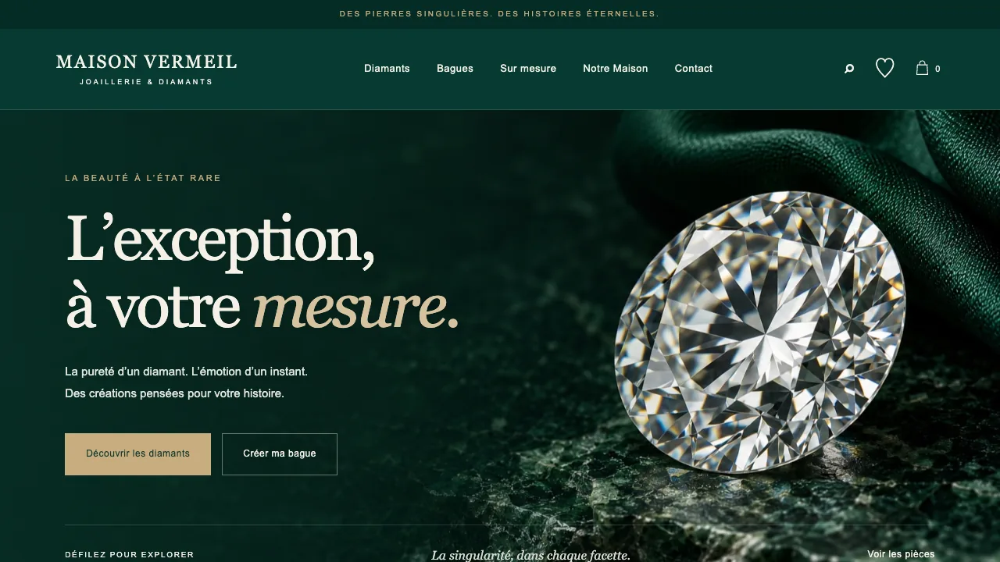
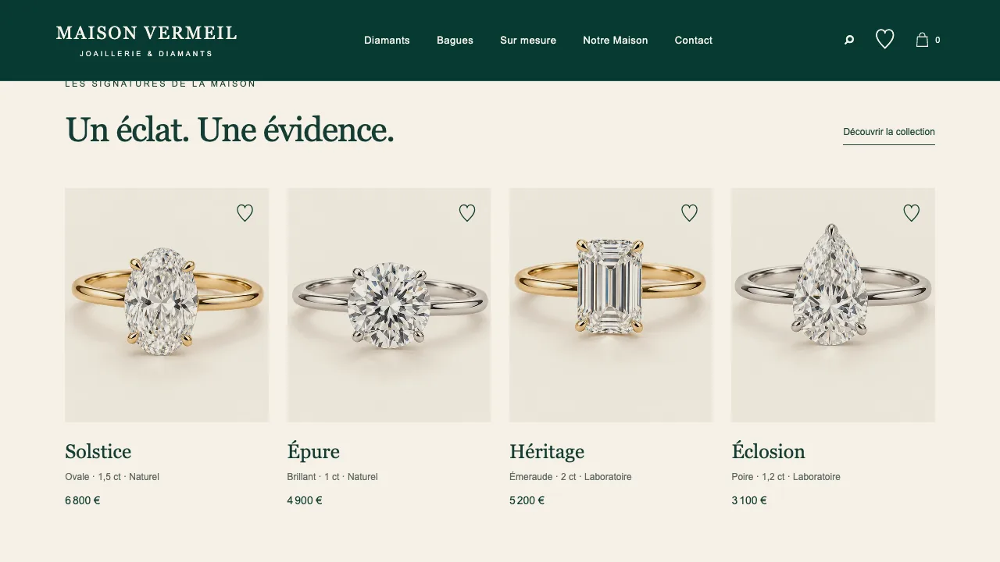
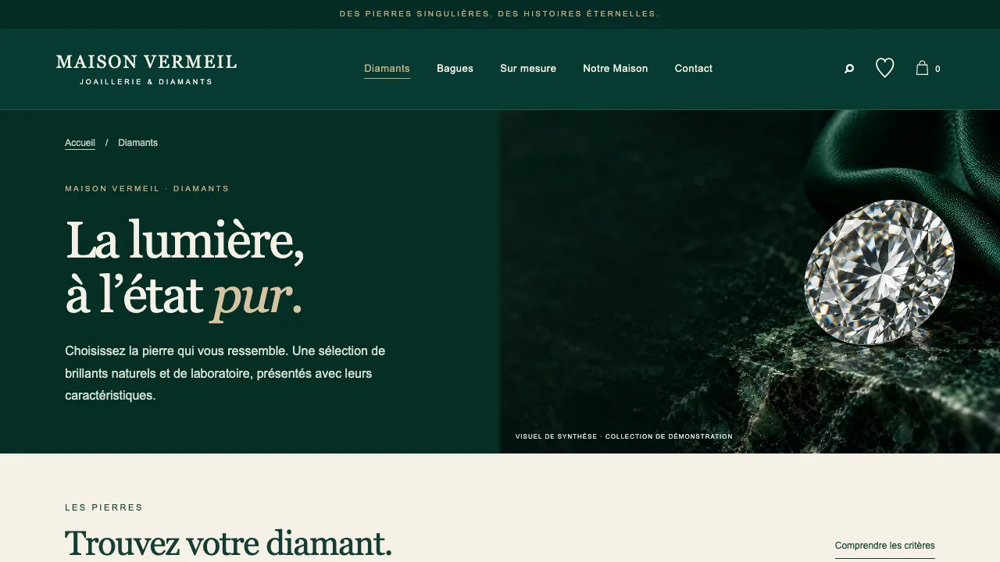
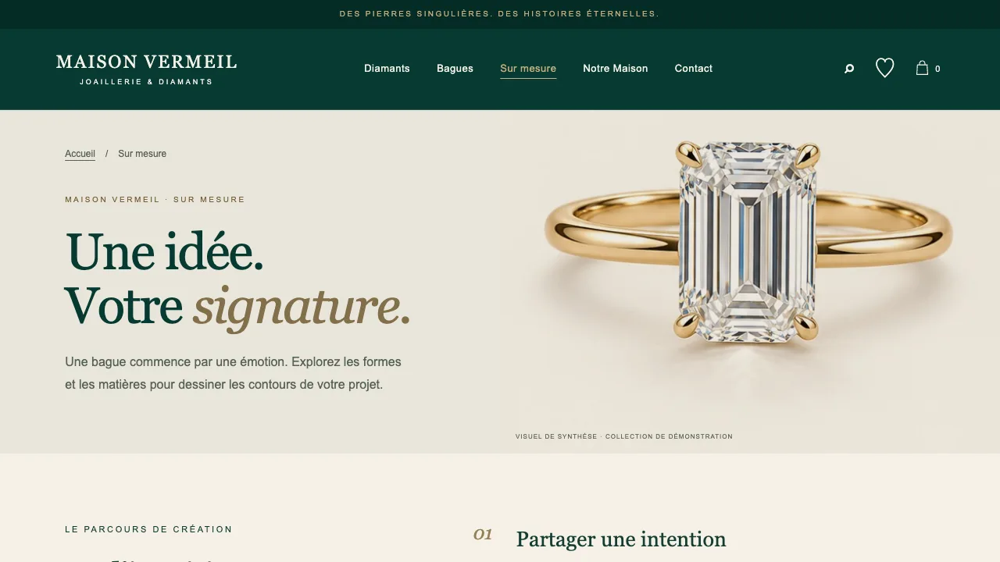
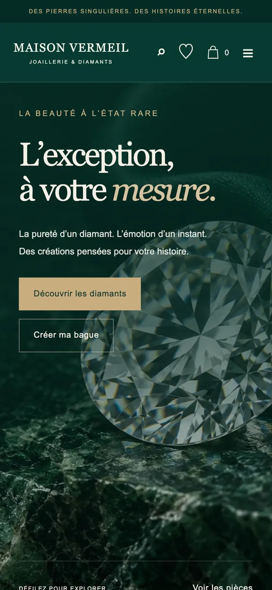
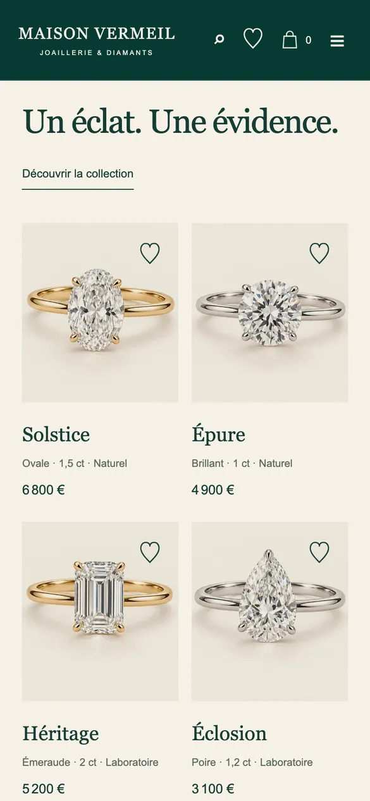
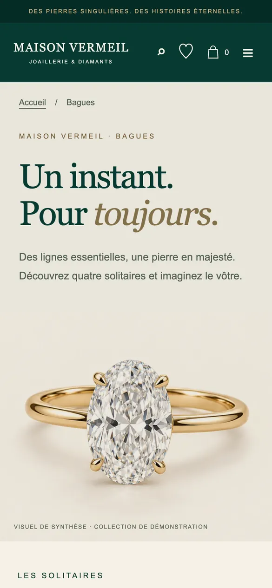

Maison Vermeil — joaillerie et diamants
Boutique de démonstration de joaillerie : diamants, bagues, création sur mesure, favoris et panier, dans une identité vert profond et or.
Présentation
Conception d’une boutique de joaillerie de démonstration : une page d’accueil qui installe l’univers de la maison, des catalogues Diamants et Bagues, un parcours de création sur mesure, des favoris et un panier. Les visuels sont des visuels de synthèse et aucun paiement n’est possible : la marque et les prix sont illustratifs.
Objectifs
- Valoriser l’image de luxe de la maison
- Faciliter le choix d’un diamant ou d’une bague
- Inviter à imaginer un bijou sur mesure
Points forts
- Identité sobre et élégante : vert profond, or et typographie à empattements
- Catalogues, favoris et panier pour une expérience de boutique complète
- Affichage adapté au smartphone, du hero aux fiches produit
Captures — ordinateur




Captures — smartphone (responsive)



Ce que ce projet montre
Pour une boutique de luxe, tout passe par l’image et la retenue. Une identité vert profond et or, des visuels soignés, des catalogues Diamants et Bagues, un parcours sur mesure, des favoris et un panier : le visiteur est guidé sans être pressé. Les prix et la marque sont illustratifs, c’est une démonstration.
Pour votre activité
Pour un projet de ce type, nos formules Starter (accueil + 4 pages) ou Pro (site vitrine de 5 à 8 pages avec animations, blog et optimisations de performance) sont les plus adaptées. Le sur-mesure se chiffre sur devis. Consultez nos tarifs et nos services, demandez un audit gratuit de votre site actuel, ou lisez notre guide : Combien coûte un site vitrine en 2026 ?.